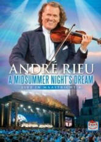

|
A Midsummer Night's Dream - Maastricht
4 (2010) - 135 Minutes
|
 |
The fourth installment in the
triumphant series sees André performing in front
thousands of rapturous fans in a highly lavish
open air concert set amongst the cultural
backdrop of his beautiful hometown home town of
Maastricht in The Netherlands, this time with
very special guests from South Africa.
The annual Maastricht concerts are some of
André's most popular, and here as always André
is joined by the world famous 50-piece Johann
Strauss Orchestra, performing a stunning
crowd-pleasing set in front of one of the most
beautiful and elaborate sets ever seen.
It was a magical event -- once seen, never
forgotten.
"These are not just any concerts... this really
means a lot for me emotionally ... Maastricht is
where I live: this is my city. And when you find
yourself playing to your own public, well, it
really has an effect." |
Where to buy?
|
|
DVD Tracklist
1. Seventy-Six
Trombones
2. Dark Eyes
3. Hup Holland Hup
4. Mattinata
5. Sole Mio
6. Fliegermarsch
7. Ave Maria
8. Heal The World
9. Canon
10. Africa / Baya Tsholoza
11. Pata Pata / The Lion Sleeps Tonight
12. My African Dream
13. Hallo, was machst du heut' Daisy
14. Mein kleiner grüner Kaktus
15. In einem kühlen Grunde
16. Das ist die Liebe der Matrosen
17. Le Cygne
18. Habanera
19. Hava Nagila Hava
20. Memory
21. Halleluja
22. Radetzky March
23. Strauss & Co.
24. Auld Lang Syne
25. Hup Holland Hup
26. Viva Hollandia
27. Ein Stern (…der deinen Namen trägt)
28. La Ola Walzer
29. Hup Holland Hup
30. Anton aus Tirol
31. Maastricht Anthem
32. Maastricht, City Of Jolly People
33. Adieu, Little Captain Of My Heart |
|